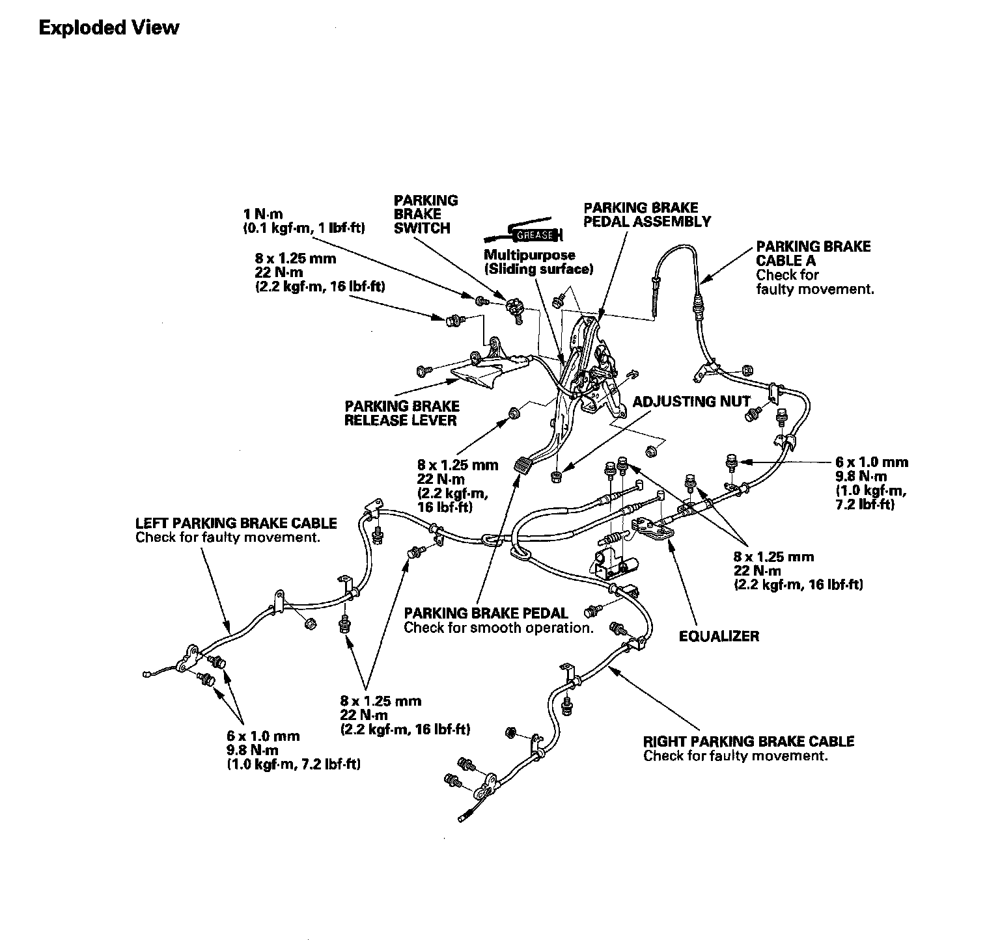
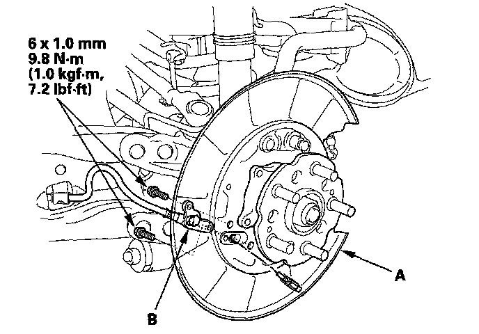

Parking Brake Cable: Service and Repair
Parking Brake Cable ReplacementParking Brake:

NOTE:
^ The parking brake cables must not be bent or distorted. This will lead to stiff operation and premature failure.
^ Refer to the Exploded View as needed during this procedure.
1. Loosen the parking brake cable adjusting nut.
2. Remove the parking brake shoes, and disconnect the parking brake cable from the parking brake lever.
3. Remove the parking brake cable mounting bolts from the backing plate (A).

4. Pull the parking brake cable (B) and remove it from the backing plate.
5. Reinstall the parking brake cable in the reverse order of removal, and note these items:
^ Be careful not to bend or distort the cable.
^ Connect the parking brake cable to the brake lever, and install the parking brake shoes and drum.
^ Do the parking brake adjustment. Apply the parking brake firmly 10 times then adjust it again.